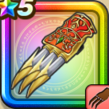

閃光烈火のツメ
攻略班 8.0点 / せいけんづきまわしげり闘魂きあいためせいけん光爆撃閃光烈火拳※錬成で強化可能
くわしい特徴
【レベル別習得スキル】 Lv1【バトマス】攻撃力+5 Lv1せいけんづき（消費MP：7）腰を落としてまっすぐ拳で突き、敵1体に威力180%の体技ダメージを与える Lv10まわしげり（消費MP：8）足で周囲をなぎはらい敵全体に威力110%の体技ダメージを与える Lv15闘魂きあいため（消費MP：15）次のターンの斬撃・体技ダメージを2倍にし、自身の闘魂を2段階上げる Lv20せいけん光爆撃（消費MP：26）全体に210%のイオ属性体技ダメージ後、確率で幻惑を付与する。さらに自身の闘魂を1段階上げる Lv30閃光烈火拳（消費MP：30）敵単体に威力420%のギラ属性体技ダメージを与え、自身の闘魂を1段階上げる。闘魂状態が3の時、威力が500%に上がり、闘魂を解除する Lv35虫系へのダメージ+5% Lv40ドラゴン系へのダメージ+5% Lv45攻撃時+2%の確率で幻惑を与える Lv50攻撃力+12錬成スキル改1闘魂きあいため改（消費MP：20）次のターンの斬撃・体技ダメージを2倍にし、会心率を2段階上げ、自身の闘魂を2段階上げる改2閃光烈火拳改（消費MP：42）敵単体に威力500%のギラ属性体技ダメージを与え、自身の闘魂を1段階上げる。闘魂状態が3の時、威力が700%に上がり、闘魂を解除する改3ドラゴン系へのダメージ+10%改4錬成ぶき特別演出解放・メガモン討伐結果発表時に特別演出が追加・武器の見た目に特別なエフェクトが追加 【限界突破スキル】 1凸スキルの斬撃・体技ダメージ+5% 2凸スキルの斬撃・体技ダメージ+5% 3凸スキルの斬撃・体技ダメージ+5% 4凸スキルの斬撃・体技ダメージ+5%